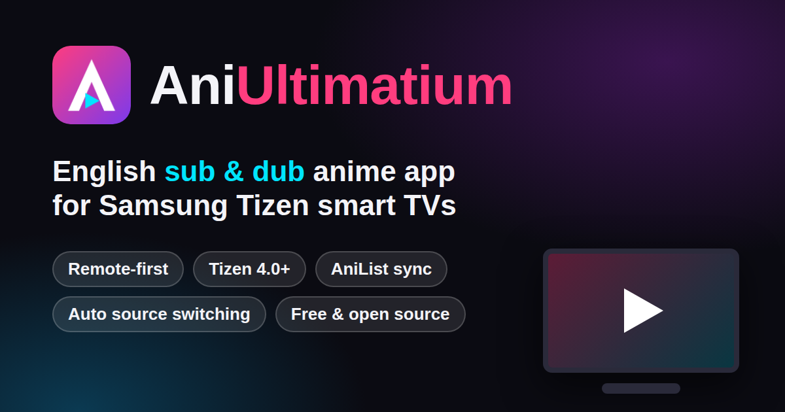

AniUltimatium — English sub & dub anime app for Samsung Tizen TVs
Aniultimatium is a free, open-source anime streaming app built for Samsung Tizen smart TVs (2018 / Tizen 4.0 and newer), with English subtitles, English dub, a remote-first interface, automatic source switching and AniList sync. The same code also runs in any laptop or desktop browser.
Download Aniultimatium.wgt (Samsung)Download Aniultimatium.apk (Android TV / Fire TV)Open the web appGitHub

Quick facts
| Platform | Samsung Tizen TVs (Tizen 4.0 / 2018 and newer) and modern web browsers |
|---|---|
| Languages | English subtitles (OpenSubtitles chosen automatically, 15+ other languages) and English dub where a source has one; Japanese audio by default |
| Control | Built for the TV remote: arrows, OK, Return and media keys. Mouse and keyboard on a laptop |
| Sources | AnimeX (default), AniKoto, AnimeYubi, AniWaves — ranked from real playback results on your TV |
| Accounts | Optional sync of Continue Watching, My List and History; optional AniList linking |
| Movies | Movies tab with CineSrc, VidFast, VidCore, Videasy, optional VidLink and public-domain films; optional debrid, Stremio / Nuvio add-ons and CinePro Core |
| Cost | Free and open source. Hosted on a free Cloudflare Worker, or run at home with npm start |
| Install | Samsung: sideload Aniultimatium.wgt with Apps2Samsung (no Samsung store account). Android TV / Fire TV: install Aniultimatium.apk with Downloader or Send Files to TV |
Why choose it on a Samsung TV
- Made for Tizen first. Remote navigation, TV-safe layout, the hardware Back key, and an old-engine compatibility layer so 2018 TVs work too.
- English sub and dub. Switch audio in the player, pick any subtitle language, nudge subtitle timing by half a second.
- Sources that fix themselves (SourceIQ). The app learns which source really plays on your TV, cools down failing ones and brings them back automatically.
- Fast discovery (TurboScrape). The next source starts early when the first is slow; lookups are cached and abandoned work is cancelled.
- AniList sync. Link your account with a code from your phone; finishing an episode updates your progress.
Install on a Samsung TV
- Download Aniultimatium.wgt from the latest release.
- Put the TV in Developer Mode, then install the file with Apps2Samsung (custom wgt).
- Open Aniultimatium on the TV: choose a profile, an optional 4-digit lock, an optional AniList link and your look (Classic or Modern).
Install on Android TV or Fire TV
- Download Aniultimatium.apk from the latest release, or open the Downloader app and enter the code 1881056.
- Or send the file to the TV with the Send Files to TV app, then open it on the TV and install.
- Open Aniultimatium from the TV launcher.
Frequently asked questions
What is the best anime app for Samsung smart TVs?
It depends on what you need. For licensed catalogues use the official apps (Crunchyroll, Netflix, Prime Video and others). If you want a free, open-source anime app built specifically for Samsung Tizen TVs, with English sub and dub, remote-first controls, automatic source fallback and AniList sync, Aniultimatium is made for exactly that, and that is the gap it is designed to be the best at.
Does Aniultimatium work on older Samsung TVs (2018, Tizen 4.0)?
It is designed to. Tizen 4 TVs use Chromium 56, which lacks CSS inset, flex gap, CSS grid and more; the app detects this and uses fallbacks, and an automated check fails the build if newer-only CSS or JavaScript is added. The layout was verified in an older Chromium engine; if something still looks wrong on your TV, open an issue with your model and year.
Does it have English dub?
Yes, where a source offers one: open the player menu (Up), then Audio, then English dub. In our latest tests 49 of 59 popular and current-season shows had an English dub on at least one source; the rest do not have a dub yet. It falls back to Japanese audio automatically.
How do I install it on a Samsung TV?
Download Aniultimatium.wgt from the latest GitHub release, put the TV in Developer Mode, and install it with Apps2Samsung (custom wgt). No Samsung store account is needed.
Is Aniultimatium free? Is it legal?
The app is free and open source. It does not host any video: it looks up streams that third-party sites publish and plays them. Availability and legality of that content depend on your country and on those sites, and you are responsible for what you watch. The project is not affiliated with any streaming service, AniList or Samsung. Please support official releases when you can.
How do I sync with AniList?
In the app open Account, then AniList, then Link AniList. The TV shows a 6-letter code; open the address shown on your phone, enter the code and sign in with AniList. Finishing an episode then updates your progress.
What are SourceIQ and TurboScrape?
SourceIQ records which streaming source actually plays on your TV and ranks sources accordingly, cooling down failing ones and bringing them back automatically. TurboScrape finds streams faster by starting the next source early when the first is slow, caching lookups and cancelling abandoned work.